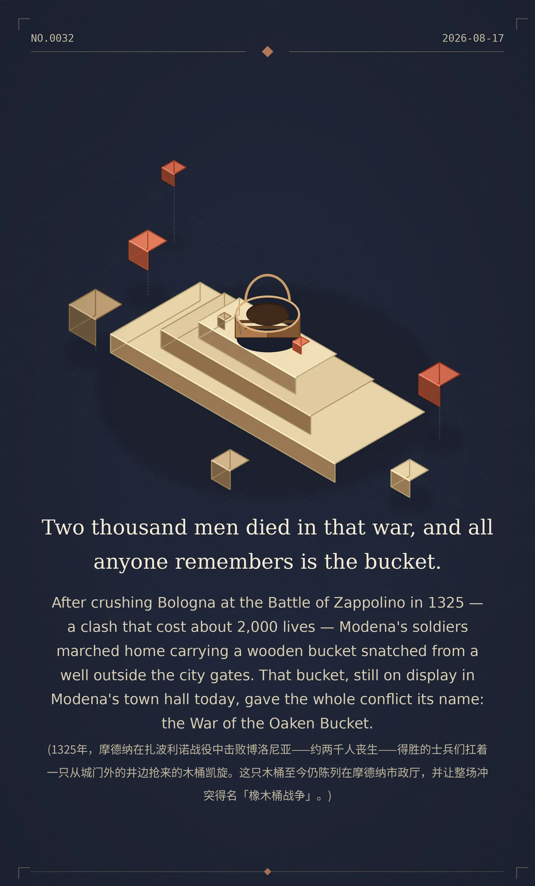

Two thousand men died in that war, and all anyone remembers is the bucket.
After crushing Bologna at the Battle of Zappolino in 1325 — a clash that cost about 2,000 lives — Modena's soldiers marched home carrying a wooden bucket snatched from a well outside the city gates. That bucket, still on display in Modena's town hall today, gave the whole conflict its name: the War of the Oaken Bucket. (1325年，摩德纳在扎波利诺战役中击败博洛尼亚——约两千人丧生——得胜的士兵们扛着一只从城门外的井边抢来的木桶凯旋。这只木桶至今仍陈列在摩德纳市政厅，并让整场冲突得名「橡木桶战争」。)